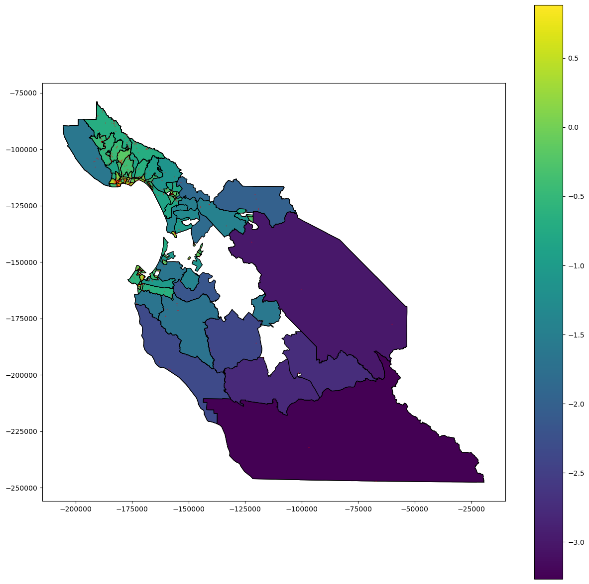

Here is a plot of the base 10 log of densities of sensors. The small red dots are sensors. The exponent to which census densities are raised is plotted on the legend. the unit for densities is sensors per squared kilometer.
